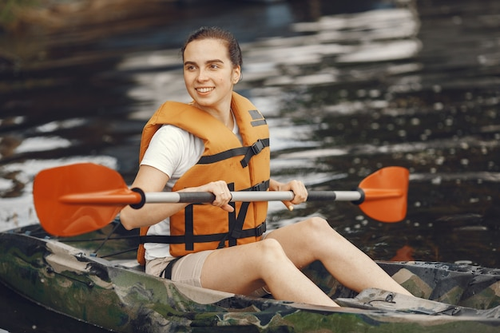

White Water Rafting

At Whitewater Adventures, our mission is to create unforgettable rafting experiences that inspire adventure, build confidence, and bring people closer to nature. We are committed to providing safe, exciting, and memorable journeys for every guest, whether they are first-time rafters or seasoned explorers. Guided by our values of safety, teamwork, and respect for the environment, we strive to make every trip an opportunity to create lasting memories. Our motto is simple: Adventure with purpose, paddle with passion, and return with stories worth sharing.